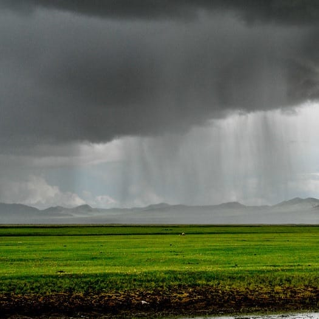
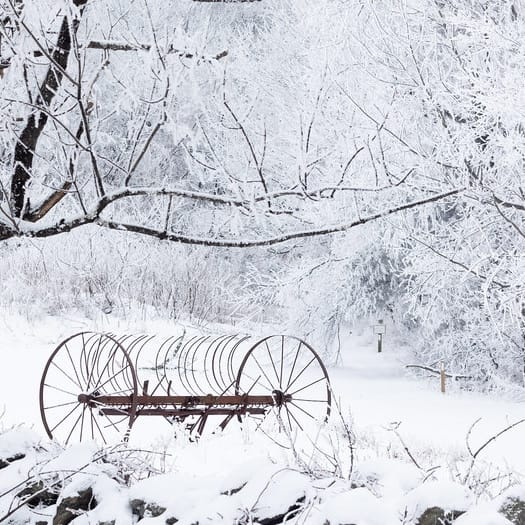
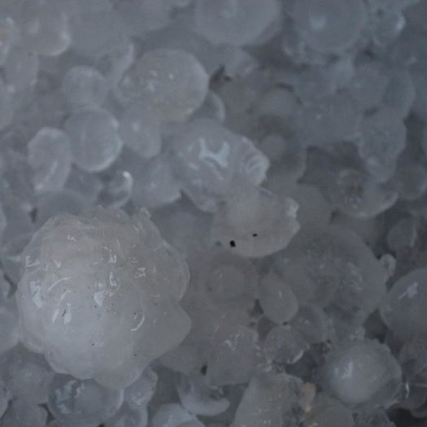

Image Gallery
- dont need to load the full version right upon page load. instead load small image that gives blur effect.
- use class for css selector
- observer.unobserve(image);
- image.src = img.src.replace('&w=10&' '&w=800&'); instead of having data-src var in js
-
this image would be used for thunderstorms
-
this image would be used for light rain, not heavy rain
-

this image would be used during heavy rain, not light rain
-

this image would be used when there is snowfall
-
this image would be used when it is overcast
-
this image would be used when it is partly cloudy
-

this image would be used when there is hail
-
this image would be used during the day when there are little to no clouds and the sun is shining
-
this image would be used when it is particularly windy